| 블루프린트에서 액터를 추가하는 방법에 대해 알아 보겠습니다. 큐브를 10개로 이어서 한줄로 추가 해보겠습니다. 1. 오른쪽 마우스를 클릭해서 블루 프린트 > 블루 프린트 클래스 > 액터를 생성 여기서 파일 이름은 BP_GROUND입니다. 2. 컴포넌트 추가 > Cube를 추가 합니다. 3. 스케일을 수정하고 머티리얼을 지정합니다. 스케일 : 10, 10, 0.1 머티리얼 : M_Ground_Moss 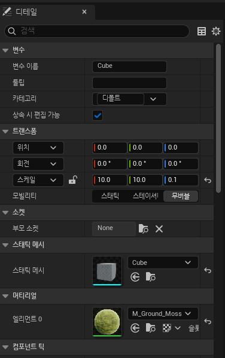 4. 화살표(Arrow)를 추가 합니다. 위치: 500, 0, 0 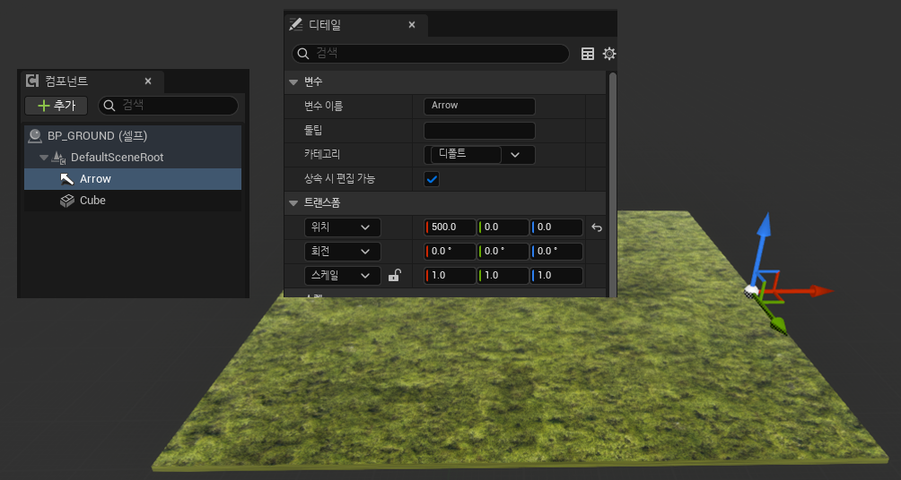 5. BP_GROUND 블루프틴트에서 함수를 추가 합니다. 함수 이름은 GetAttachTransform입니다. 6. 출력 버튼으로 리턴값을 설정 합니다. 리턴값 타입 : 트랜스폼 리턴값 이름: AttachTransform 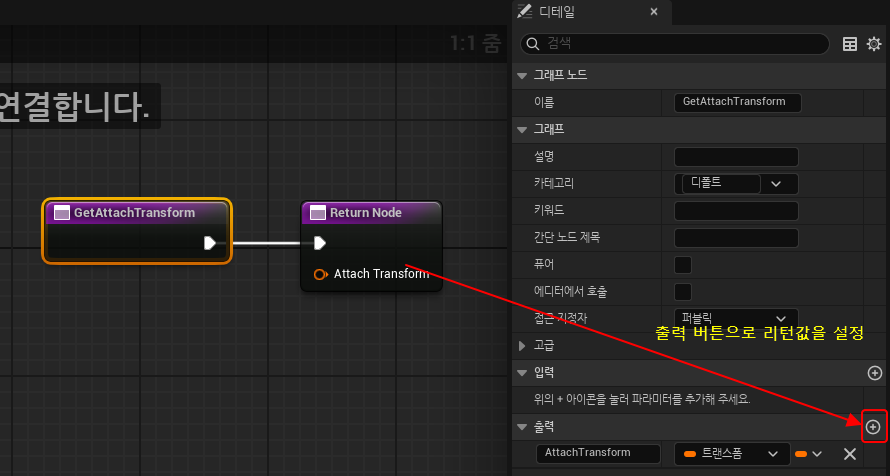 7. Arrow의 월드트랜스폼 값을 얻어 옵니다. 컴포넌트 패널에서 Arrow 컴포넌트를 드래그 합니다. Get World Transform으로 월드 트랜스폼을 구합니다. 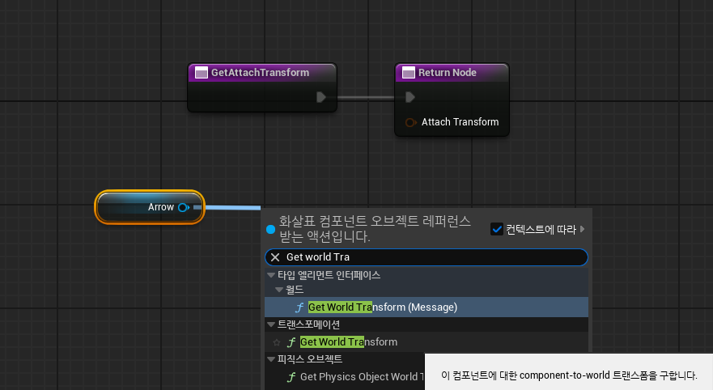 8. Arrow 월드 트랜스폼 값을 Return Node의 "Attach Transform" 핀에 연결 합니다. 완성된 함수는 다음과 같습니다. 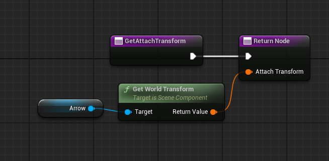 9. GameMode에 AddGround 함수를 추가하고 BP_GROUND를 스폰 해보겠습니다. 스폰은 "Spawn Actor from Class"로 노드를 생성합니다. 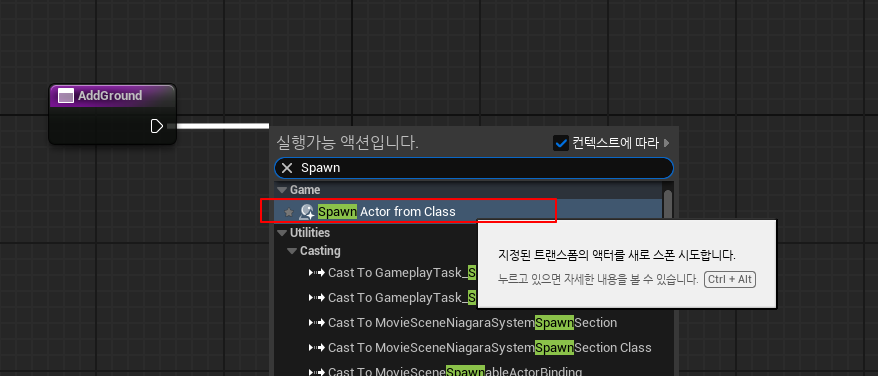 10. Class를 BP_GROUND로 지정 합니다. 11. Spawn Transform은 변수로 승격하고 이름을 NewSpawnTransform으로 변경 합니다. 새로 추가되는 액터는 NewSpawnTransform 위치에 스폰이 됩니다. 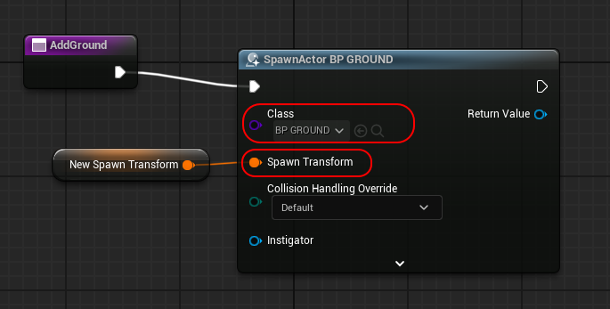 12. BP_GROUND로 형변환 합니다. Cast To BP_GROUND 노드를 생성합니다. 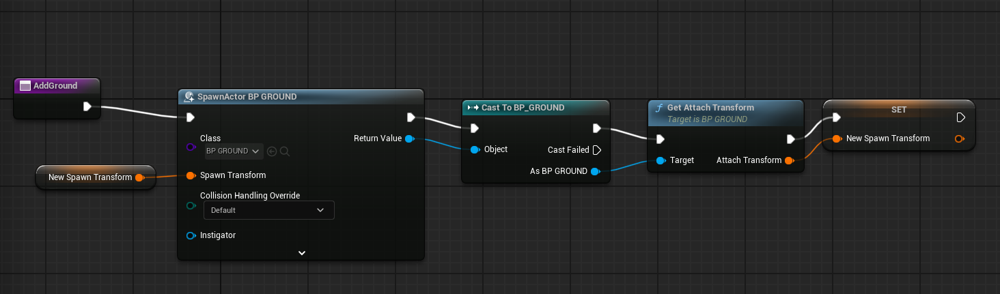 13. BP_GROUND의 GetAttachTransform으로 NewSpawnTransform 변수 값을 셋팅 합니다. 게임 모드에서 BP_GROUND를 여러개 배치해 보겠습니다.14. gamemode 이벤트 그래프에서 Event BeginPlay를 추가 합니다. 15. 그라운드를 여러개 배치하기 위해 흐름 제어의 For Loop 노드를 생성합니다. 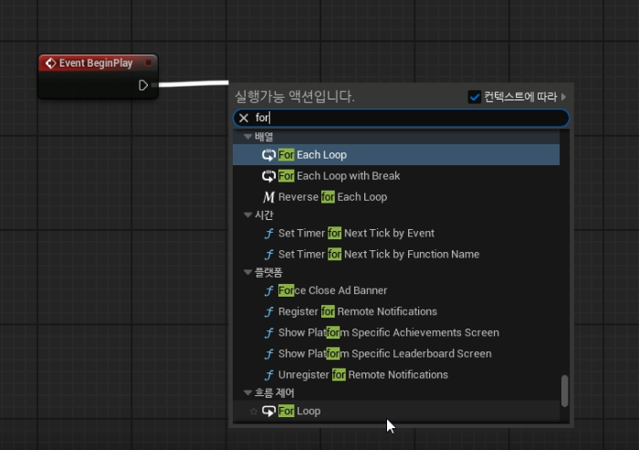 16. For Loop에서 Add Ground 함수를 실행합니다. 0부터 4까지 5번 Add Ground 함수를 실행 합니다. 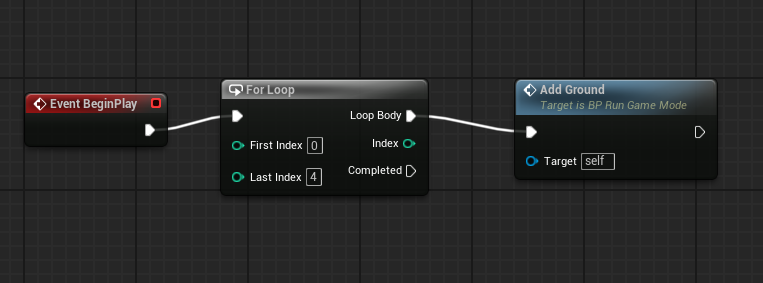 17. 실행 화면입니다. 잔디로 깔려 있는 부분이 BP_GROUND입니다. 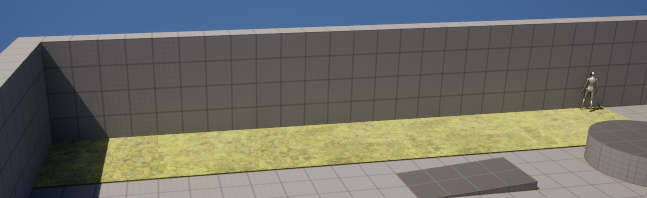 |